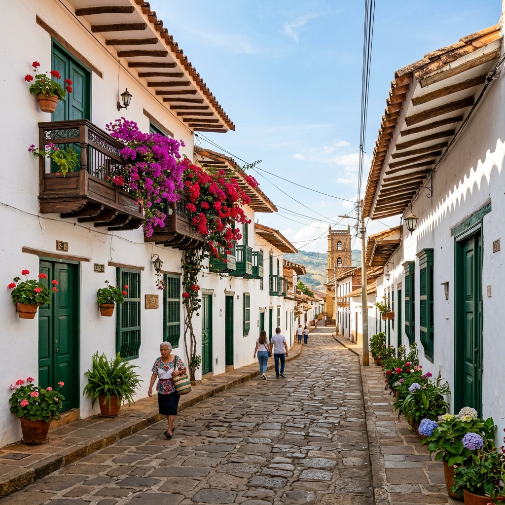
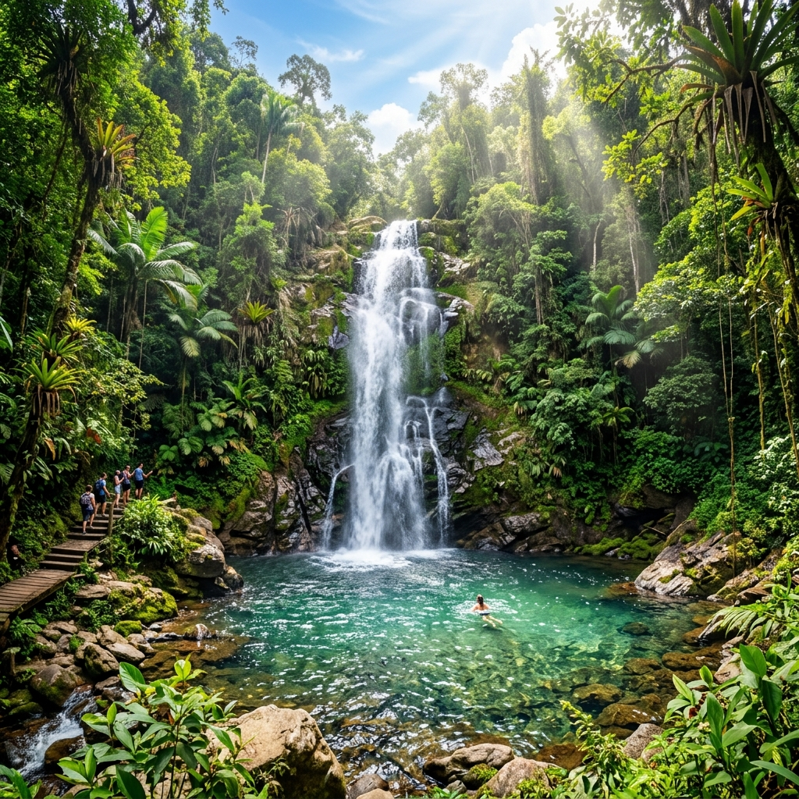
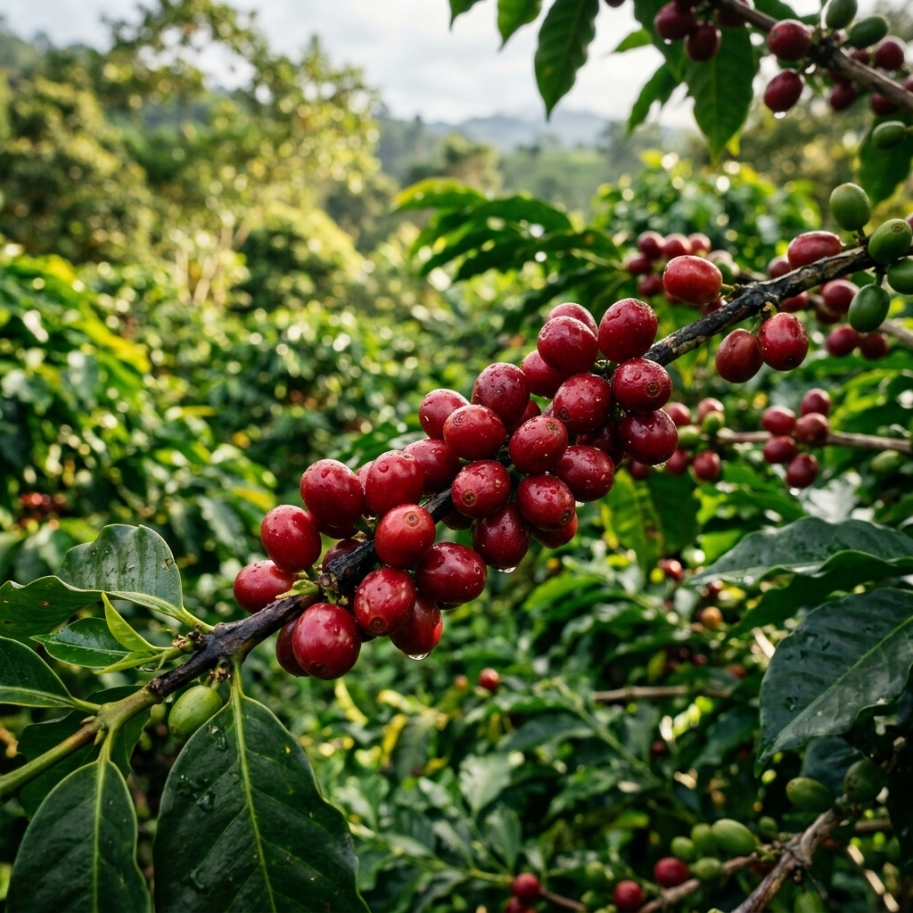

Cuna del café en Colombia. Sumérgete en nuestra historia colonial, maravillas naturales y vibrante cultura.
Fundada en 1583, Salazar de las Palmas es una joya colonial en el corazón de Norte de Santander. Conocida históricamente como la cuna del café en Colombia, nuestras tierras vieron nacer las primeras exportaciones del grano que hoy identifica a nuestro país ante el mundo.
Nuestro municipio combina la riqueza de la arquitectura colonial con exuberantes paisajes montañosos, ríos cristalinos y una calidez humana incomparable. Ven y vive la verdadera esencia del turismo cultural y ecológico.

Explora los rincones más hermosos de nuestro municipio. Desde majestuosas cascadas hasta el corazón de nuestra cultura cafetera.

Descubre uno de los lugares más emblemáticos de Salazar de las Palmas, donde la naturaleza y la tradición religiosa se unen en un entorno lleno de paisajes y tranquilidad.
Ver más
Disfruta experiencias al aire libre, recorridos ecológicos y espacios recreativos modernos diseñados para el deporte y la integración familiar.
Ver másRecorre el corazón histórico del municipio y conoce espacios que conservan la arquitectura, cultura y tradición de Salazar de las Palmas.
Ver más